Unit 1 · The investigation of ancient sites and sources · Lesson 1
Sources, evidence and the historian’s questions
How do historians turn the things people left behind into evidence about the past?
Year 11 Ancient History · Present with → or space · Read on a phone with R

Connect · See – Think – Wonder · 6 minutes · press K for the timer
Look closely. What could this be?

only what is really there
two thin, broken, flat brown pieces · lines of dark writing · two styles of handwriting?
what it might be, and how sure you are
wood or bark (fairly sure) · a letter or a list (fairly sure) · someone here could write (sure) · it was thrown away (guess)
questions you want answered
Who wrote it, and to whom? · How old is it? · How did something so thin survive?
Connect · the reveal
A birthday invitation, about 1,900 years old
- What: a letter in ink on a thin leaf of wood
- Where: found in 1985 at Vindolanda, a Roman fort in northern Britain
- When: about 97–105 CE
- Who: from Claudia Severa to her friend Sulpicia Lepidina
- Now: in the British Museum, London
Claudia Severa to her Lepidina greetings. On 11 September, sister, for the day of the celebration of my birthday, I give you a warm invitation to make sure that you come to us, to make the day more enjoyable for me by your arrival, if you are present (?). Give my greetings to your Cerialis. My Aelius and my little son send him (?) their greetings. [in a second hand:] I shall expect you, sister. Farewell, sister, my dearest soul, as I hope to prosper, and hail. [on the back:] To Sulpicia Lepidina, wife of Cerialis, from Severa.
Letter from Claudia Severa to Sulpicia Lepidina · ink on wood · about 97–105 CE · Tab. Vindol. 291, translation as published by Roman Inscriptions of Britain Online · (?) marks a word the editors are unsure of
1 · Sources and evidence · I do — one example of each type
Seven types of ancient source
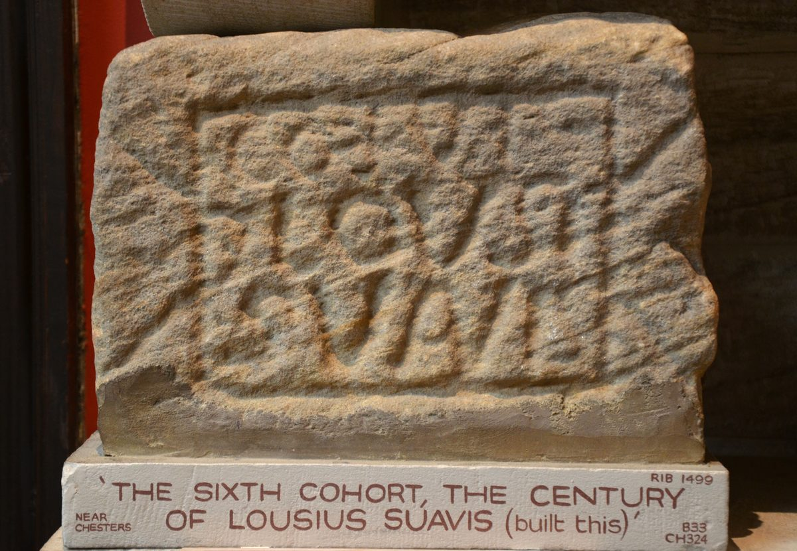
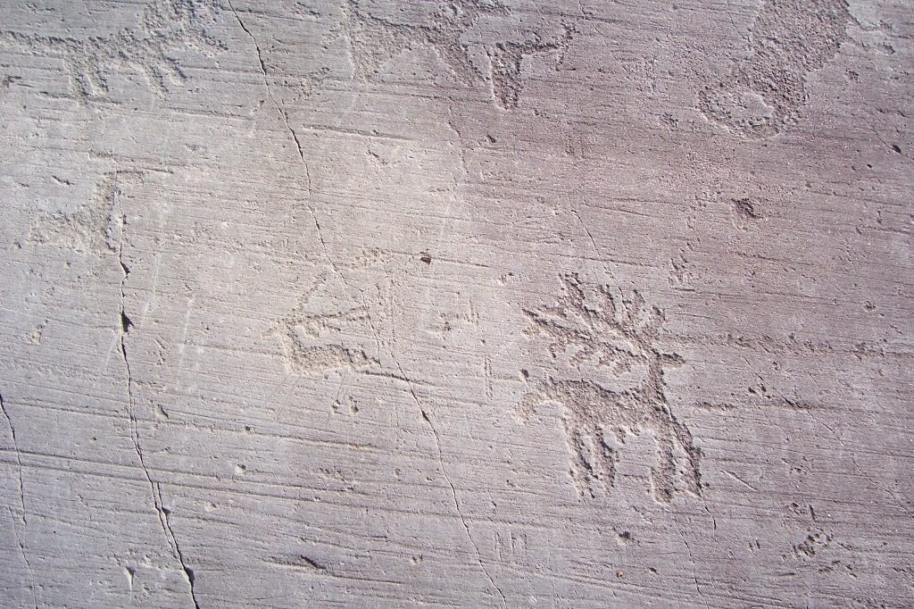
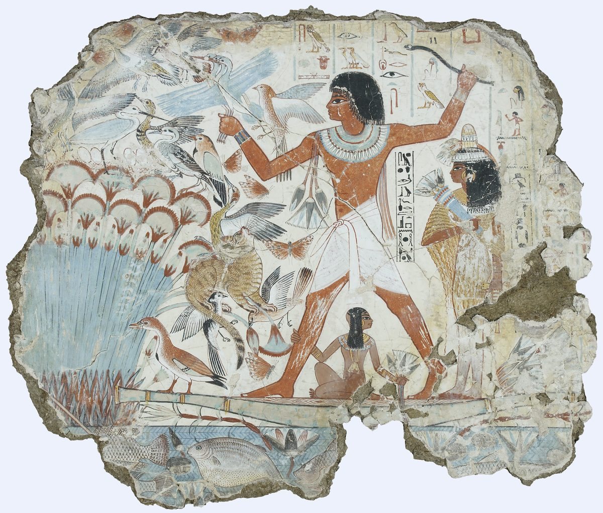

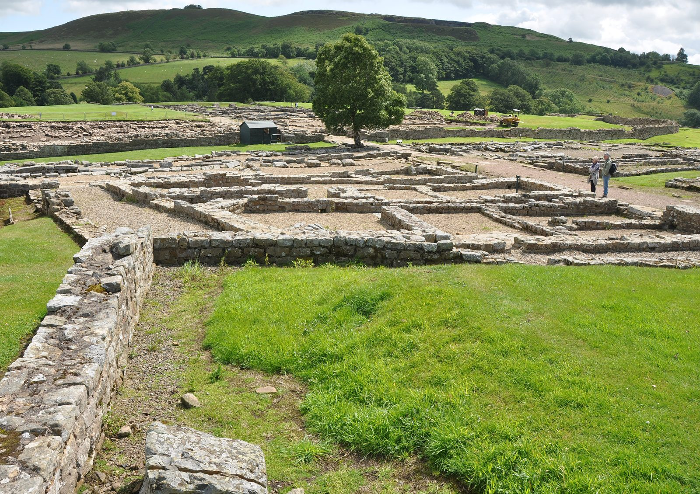
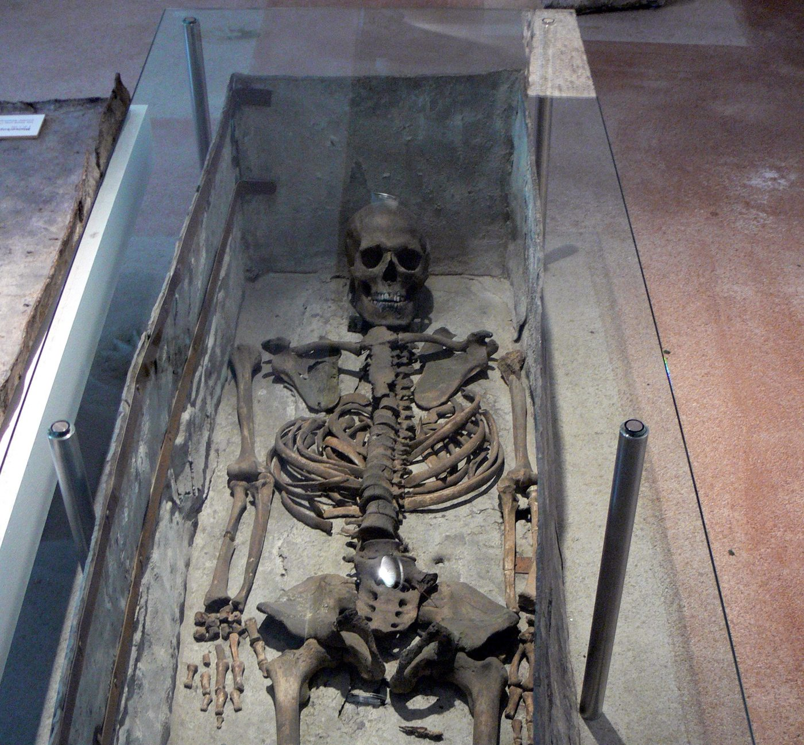
Could the tablet be more than one type? Yes: a text, and an artefact (a piece of wood someone made and used).
Images: Fæ (CC BY-SA 3.0) · Carole Raddato (CC BY-SA 2.0) · Luca Giarelli (CC BY-SA 3.0) · Egyptian painting (Public domain) · Victuallers (CC BY 4.0) · Nilfanion (CC BY-SA 3.0) · Wolfgang Sauber (CC BY-SA 3.0). Full details on the last slide.
1 · Sources and evidence · I do → cold call
Digging up “not things, but people”
… the archaeologist is digging up, not things, but people.
Mortimer Wheeler, Archaeology from the Earth (Oxford: Clarendon Press, 1954), Preface · a British archaeologist who excavated in Britain and India · secondary for the ancient world, but a primary source for how archaeologists worked in the 1950s
What does it mean to dig up ‘people’?
Every object was made, used or lost by someone. The archaeologist’s real aim is the people behind the things: how they lived, what they believed, how they treated each other.
This shoe is a thing. What ‘people’ questions could it help answer?
Who wore it: a soldier, a woman, a child? How far did they walk? Who made it, and who could afford it?
1 · Sources and evidence · We do — card sort in pairs · 5 minutes · press K for the timer
Sort the ten cards: what type? primary or secondary?
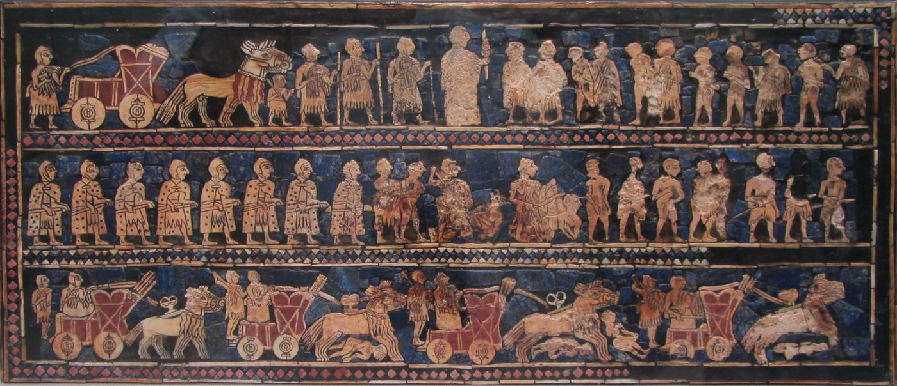
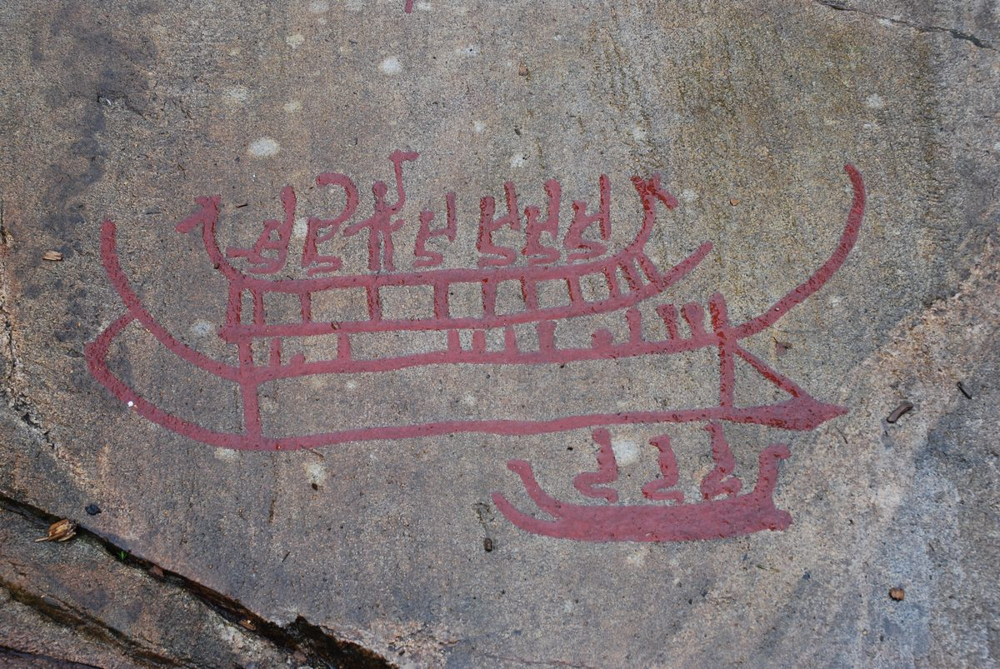
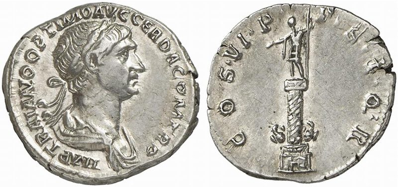
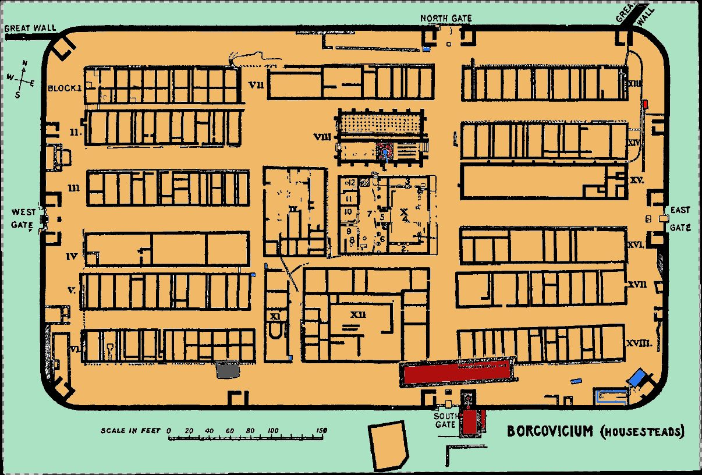
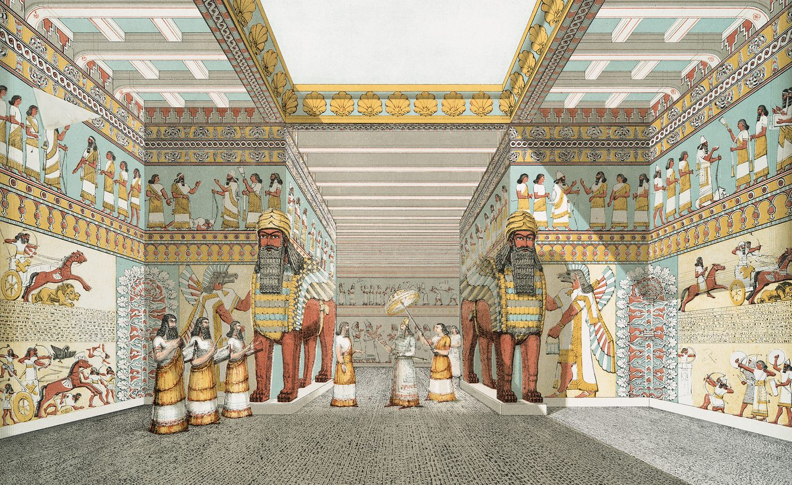
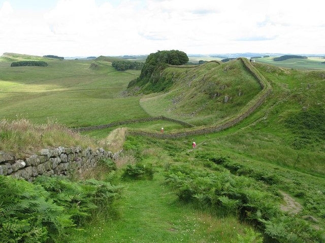
1Sort by type2Then primary or secondary3Argued about a card? Put it in a ‘tricky’ pile
Images: Hans Hillewaert (CC BY-SA 4.0) · BabelStone (CC BY-SA 3.0) · Bengt Oberger (CC BY-SA 3.0) · CNG (CC BY-SA 2.5) · Britannica 1911 (Public domain) · Layard 1849 (Public domain) · G Laird (CC BY-SA 2.0). Full details on the last slide.


.jpg){kind=link}
.jpg){kind=link}